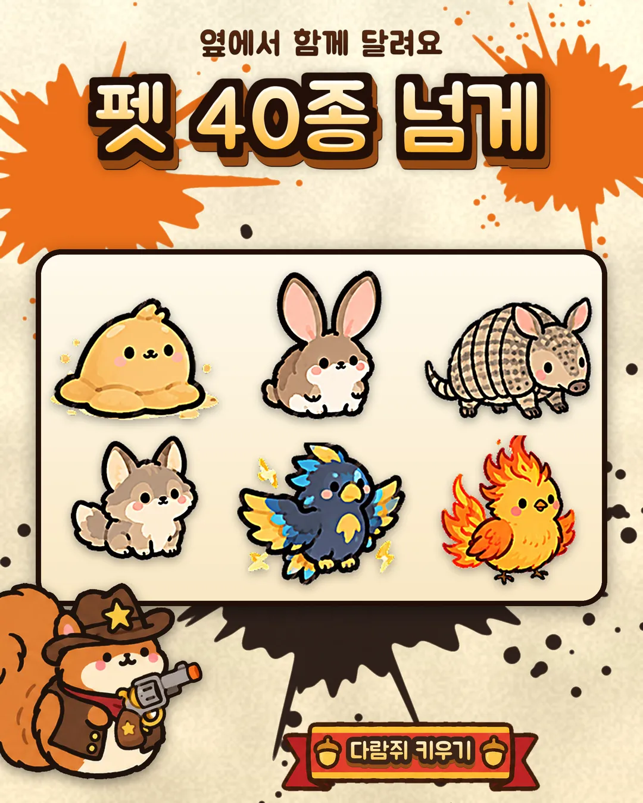
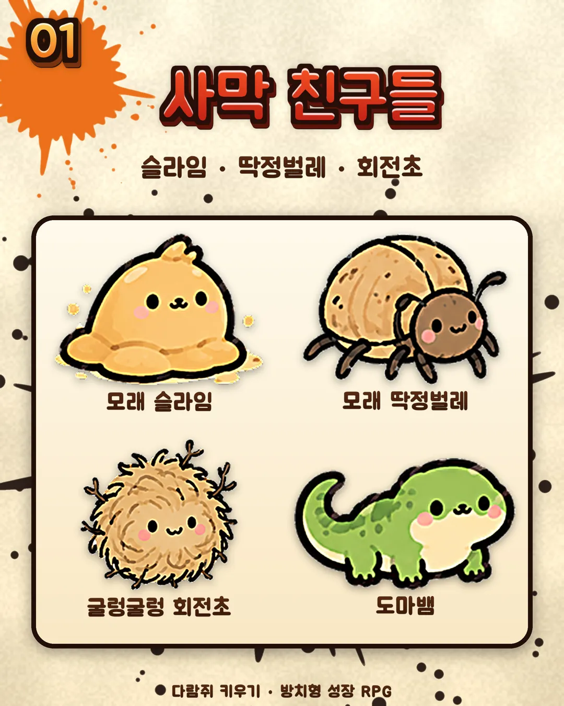
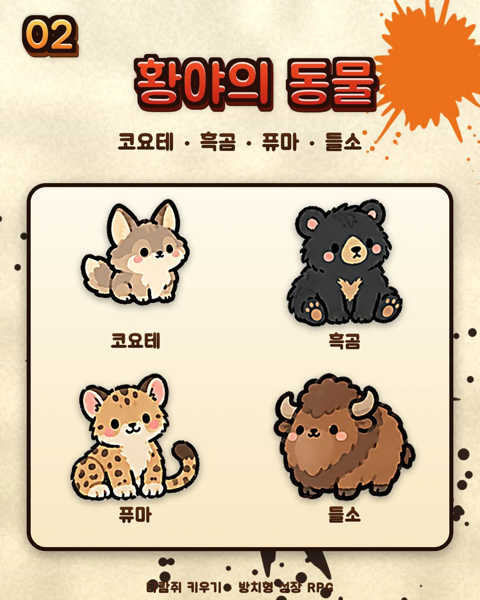
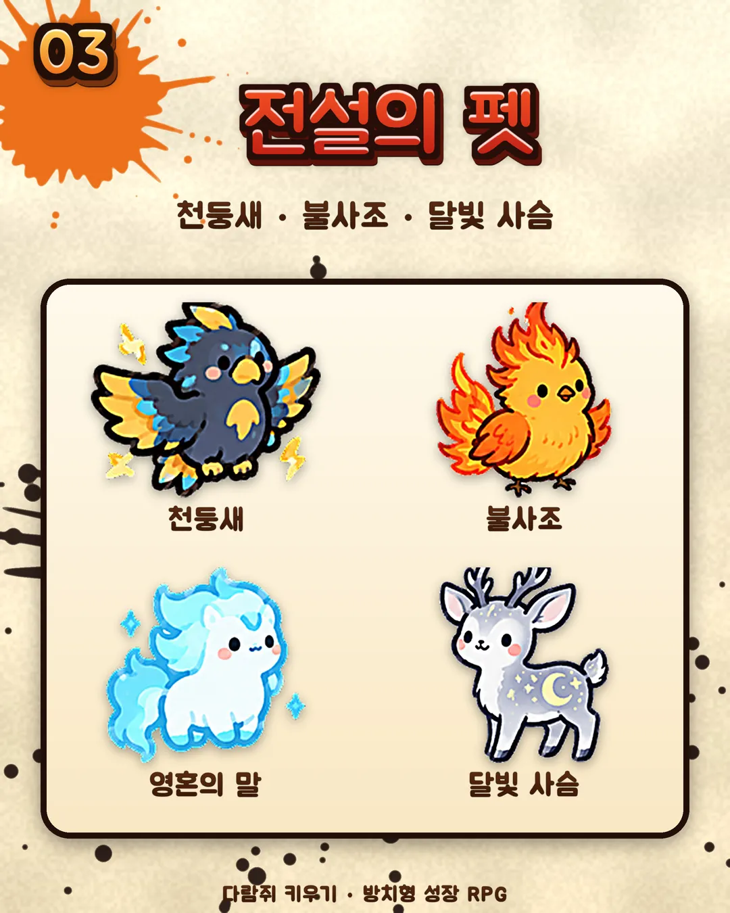

다람쥐 키우기 펫 모으기 | 모래 슬라임에서 달빛 사슴까지

오늘은 다람쥐 키우기의 펫 친구들을 소개해요.
3구역까지 가면 보안관 곁에 첫 펫이 따라붙어요.
도토리도, 이동 속도도 같이 챙겨 주는 고마운 동료예요.
사막 친구들

처음 만나는 건 사막에 사는 조그만 친구들이에요.
모래 슬라임이 통통 튀며 따라오는 게 은근 귀여워요.
작아도 도토리와 이동 속도를 꼬박꼬박 올려 줘요.
황야의 동물

조금 더 모으다 보면 덩치 큰 동물도 만나요.
흑곰이 보안관 옆을 뛰는 모습은 꽤 든든해요.
코요테, 퓨마, 들소까지 황야 느낌이 물씬 나요.
전설의 펫

영혼의 말, 태양 독수리, 별빛 코요테도 여기 있어요.
이름만 들어도 뽑기 버튼에 손이 저절로 가요.
도감 채우는 재미를 아는 분께 잘 맞아요.
펫 뽑기로 단짝을 하나씩 늘려 보세요.
보안관 옆자리, 누구로 채울지 직접 골라 보세요!
무료로 받기
다람쥐 키우기 : 방치형 성장 RPG 는 무료로 즐길 수 있어요.
일부 유료 아이템이 있고, 뽑기 확률은 게임 안 각 뽑기 화면의 '확률' 버튼에서 볼 수 있어요. 보상형 광고가 들어 있어요.